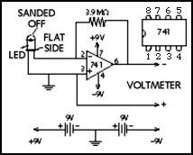

This drawing is the corrected copy of the sensor appearing
on page 107 in May's issue of
Scientific American.

Haze-SPAN
, A project of the
Concord Consortium
Copyright © 1997. All rights reserved.
Last updated: 18-Apr 1997: http://www.concord.org/haze/corrected.html
Questions about Haze-SPAN:
carolyn@concord.org
| about this site:
webmaster@concord.org